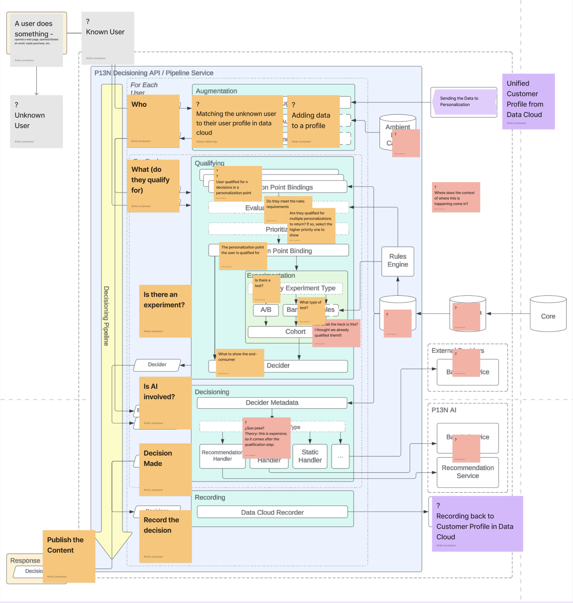
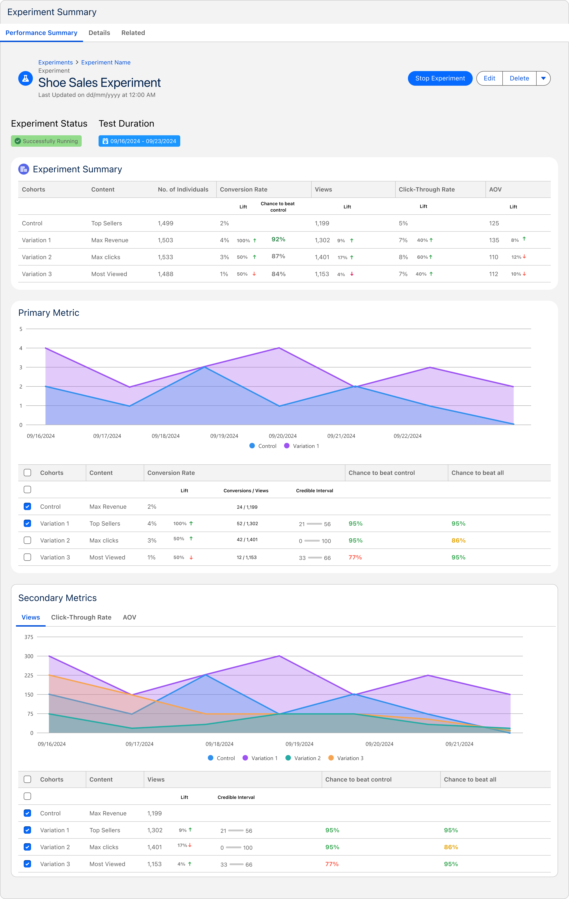

The problem
The platform got smarter. Confidence in it didn't.
Salesforce's users were asking for more visibility and transparency into how decisions get configured and how they perform. They had no reliable way to establish the credibility of the content being delivered to their own customers, a gap that only widened as AI and ML took over more of the decisioning.
The engine was making more calls, more often, on behalf of more brands. But nothing in the platform let a marketer prove a call was the right one. Personalization without verification is just a guess at scale.
Audience
Two people, two very different moments of doubt.
Marketing specialists and website admins. Neither is a statistician; both are accountable for what a customer sees. The experimentation model had to serve them at the exact point where they hesitate.
Two surfaces, one underlying need: split the audience, run the variations, and show me which one won, without leaving the flow I'm already in.
How I got staffed
The ask came from the top.
The senior director of product went to my manager and asked for design help on experimentation, an effort important enough that it was being escalated rather than queued. I got staffed onto it.
My core partnership team was small and senior: a director of product, a senior PM, an engineering architect, and an engineering manager. No existing design work, no shared definition of what experimentation even meant inside Salesforce Personalization Services. That was the first thing to fix.
Unpacking the problem
Before designing anything, I ran a workshop.
The team had a mandate but not a shared picture. I ran a working session to get everyone to the same definition, the same users, and the same set of jobs, then took the output and turned it into journey maps and a competitive teardown. The question on the board was blunt: what is experimentation in a Salesforce Personalization Services context, and how do we become the single source of truth for it?
That second half is what made this a platform problem rather than a feature problem. Experimentation already existed in pockets across Salesforce, each with its own model and its own UI. Standardizing it meant designing a framework for C360, not a screen for one app.
Deconstructing the architecture
To design experimentation, I had to find where it actually lives.
Experimentation isn't a screen. It's a step inside a request. Before I could design the configuration experience, I needed to understand the decisioning pipeline well enough to know exactly where an experiment interrupts it, what it can see at that moment, and what it's allowed to change. So I sat with the engineering architect and took the pipeline apart.

The engineering architecture, interrogated. Orange notes are the plain-language questions I needed answered: who is this user, what do they qualify for, is there an experiment, is AI involved, what gets recorded. Pink notes are the things nobody could answer yet.
Working through it surfaced the constraint that shaped everything downstream: experimentation sits after qualification and before decisioning. The user is already matched to a Data Cloud profile and already qualified for a personalization point by the time the experiment picks a cohort. That ordering is why an experiment can only ever choose among decisions the marketer has already made eligible, and why the configuration UI had to be built into the decision flow rather than bolted alongside it.
The pipeline, rewritten as eight sentences the whole team could hold in their head.
Where should it live?
The decision I argued for, and lost.
The architecture work answered when experimentation happens. It didn't settle what it attaches to, and that turned out to be the most consequential question in the project.
Personalization has two levels. A personalization point is a location: the homepage hero, a product-page slot. A decision is what to show there, to whom, driven by a recommender or manual content. A single personalization point can hold several decisions. My position was that an experiment belongs on the decision, because that is where the marketer has already declared an audience and a piece of content. Attaching it a level up means re-asking for both.
So I built the mental model and argued from it rather than from preference.

Working backwards from the marketer's goal (show the best content, to this audience, in this location) through how content is actually architected in our system, to the sentence that ends the argument: I have already defined my audience in a decision. Why should I redefine it for an experiment?
This was a classic engineering-first versus customer-first split. The system had been architected around the personalization point, and attaching experimentation there kept it platform-centric: easier to expose to other clouds, easier to offer as experimentation as a service. Those are real arguments, and they carried the day.
The model didn't go away, though. It went on the record, which is what made the later reversal possible.
The designs
Designing the best version of the model I argued against.
Attached at the personalization point, the wizard has to re-establish audience and content itself, so my job became making that re-asking as cheap as possible: inherit everything the platform already knows, ask for the fewest genuine decisions, and never let a marketer wonder what the experiment is about to do. Four steps: Name → Metrics → Targeting → Cohorts, one decision each, with a persistent explainer rail carrying the vocabulary experimentation demands and most marketers don't have yet.
The wizard shape wasn't a stylistic choice. The competitive teardowns showed Optimizely and Adobe both front-loading configuration into dense single screens, which works when the operator is a specialist. Our audience was a marketing specialist and a website admin, sometimes testing an ML recommender they didn't build. Sequence beat density.
The decisions behind those screens
Reading the result
Setup was half the problem. The other half was the answer.
Configuration only earns trust if the result is legible. This is the performance summary: one screen that has to answer "which variation won," "by how much," and "should I believe it" for someone who does not read confidence intervals for a living.

The Shoe Sales Experiment reading out: cohort table at the top, primary metric charted over the test window, credible intervals and win probabilities per variation, secondary metrics tabbed below.
Outcomes
An experimentation service, not an experimentation feature.
What shipped was the first experimentation service at Salesforce built to work two ways at once: inside Personalization as a native step, and as a service other clouds could call. The attachment decision I argued against is exactly what made the second half possible, which is the part of losing that argument worth saying out loud.
Which is the actual lesson from this project. Committing to a decision I disagreed with kept the business moving, and keeping the argument on the record meant it was still there when the evidence caught up.